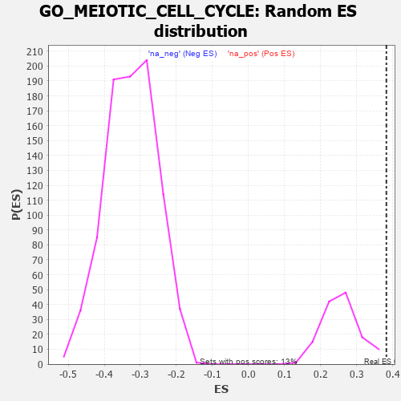

| | | Dataset | 7d |
| Phenotype | NoPhenotypeAvailable |
| Upregulated in class | na_pos |
| GeneSet | GO_MEIOTIC_CELL_CYCLE |
| Enrichment Score (ES) | 0.38238138 |
| Normalized Enrichment Score (NES) | 1.4838039 |
| Nominal p-value | 0.0074626864 |
| FDR q-value | 0.307991 |
| FWER p-Value | 1.0 |
Table: GSEA Results Summary
 Fig 1: Enrichment plot: GO_MEIOTIC_CELL_CYCLE
Fig 1: Enrichment plot: GO_MEIOTIC_CELL_CYCLE
Profile of the Running ES Score & Positions of GeneSet Members on the Rank Ordered List
| PROBE | GENE SYMBOL | GENE_TITLE | RANK IN GENE LIST | RANK METRIC SCORE | RUNNING ES | CORE ENRICHMENT | | 1 | H2AX | | | 20 | 4.738 | 0.1026 | Yes |
| 2 | SPO11 | | | 35 | 3.371 | 0.1756 | Yes |
| 3 | TEX14 | | | 164 | 1.179 | 0.1855 | Yes |
| 4 | BUB3 | | | 172 | 1.143 | 0.2100 | Yes |
| 5 | SPDYA | | | 211 | 1.026 | 0.2279 | Yes |
| 6 | WEE2 | | | 333 | 0.766 | 0.2296 | Yes |
| 7 | HUS1 | | | 362 | 0.735 | 0.2424 | Yes |
| 8 | NBN | | | 405 | 0.696 | 0.2525 | Yes |
| 9 | MLH1 | | | 423 | 0.679 | 0.2654 | Yes |
| 10 | CENPS | | | 439 | 0.666 | 0.2783 | Yes |
| 11 | ERCC1 | | | 453 | 0.660 | 0.2913 | Yes |
| 12 | CDC20 | | | 480 | 0.644 | 0.3023 | Yes |
| 13 | MND1 | | | 492 | 0.633 | 0.3149 | Yes |
| 14 | MSH5 | | | 554 | 0.612 | 0.3208 | Yes |
| 15 | AURKC | | | 633 | 0.583 | 0.3238 | Yes |
| 16 | SMC2 | | | 667 | 0.570 | 0.3323 | Yes |
| 17 | MRE11 | | | 693 | 0.560 | 0.3415 | Yes |
| 18 | TDRD9 | | | 761 | 0.542 | 0.3451 | Yes |
| 19 | RAD21 | | | 779 | 0.538 | 0.3548 | Yes |
| 20 | RPA1 | | | 817 | 0.527 | 0.3618 | Yes |
| 21 | RMI1 | | | 886 | 0.509 | 0.3645 | Yes |
| 22 | NSUN2 | | | 901 | 0.506 | 0.3740 | Yes |
| 23 | REC8 | | | 1028 | 0.478 | 0.3686 | Yes |
| 24 | STAG2 | | | 1069 | 0.470 | 0.3739 | Yes |
| 25 | RAD51 | | | 1090 | 0.466 | 0.3817 | Yes |
| 26 | CKS2 | | | 1165 | 0.452 | 0.3824 | Yes |
| 27 | FKBP6 | | | 1301 | 0.428 | 0.3748 | No |
| 28 | UBR2 | | | 1334 | 0.423 | 0.3801 | No |
| 29 | DDX4 | | | 1436 | 0.403 | 0.3762 | No |
| 30 | BOLL | | | 1561 | 0.381 | 0.3690 | No |
| 31 | ESPL1 | | | 1734 | 0.349 | 0.3549 | No |
| 32 | WAPL | | | 1758 | 0.344 | 0.3596 | No |
| 33 | TDRKH | | | 1836 | 0.331 | 0.3572 | No |
| 34 | ZW10 | | | 1973 | 0.309 | 0.3468 | No |
| 35 | EXO1 | | | 2002 | 0.304 | 0.3501 | No |
| 36 | CDK2 | | | 2226 | 0.272 | 0.3278 | No |
| 37 | TOP3A | | | 2331 | 0.256 | 0.3203 | No |
| 38 | RAD1 | | | 2528 | 0.223 | 0.3004 | No |
| 39 | MUS81 | | | 2673 | 0.202 | 0.2867 | No |
| 40 | MARF1 | | | 2704 | 0.198 | 0.2873 | No |
| 41 | WNT4 | | | 3023 | 0.146 | 0.2502 | No |
| 42 | BRCA2 | | | 3024 | 0.146 | 0.2535 | No |
| 43 | BRDT | | | 3028 | 0.145 | 0.2563 | No |
| 44 | FZR1 | | | 3205 | 0.122 | 0.2367 | No |
| 45 | EME1 | | | 3246 | 0.114 | 0.2342 | No |
| 46 | ASZ1 | | | 3299 | 0.106 | 0.2299 | No |
| 47 | TDRD1 | | | 3321 | 0.101 | 0.2295 | No |
| 48 | DMRT1 | | | 3546 | 0.068 | 0.2027 | No |
| 49 | SMC3 | | | 3701 | 0.042 | 0.1841 | No |
| 50 | HSF1 | | | 3718 | 0.039 | 0.1829 | No |
| 51 | NEK2 | | | 3871 | 0.016 | 0.1640 | No |
| 52 | TOP2B | | | 3938 | 0.005 | 0.1558 | No |
| 53 | MSH6 | | | 4129 | -0.028 | 0.1323 | No |
| 54 | MSH4 | | | 4176 | -0.038 | 0.1274 | No |
| 55 | BAG6 | | | 4563 | -0.108 | 0.0809 | No |
| 56 | SMC1A | | | 4609 | -0.120 | 0.0778 | No |
| 57 | PLD6 | | | 4799 | -0.157 | 0.0573 | No |
| 58 | SMC4 | | | 4916 | -0.180 | 0.0466 | No |
| 59 | ATRX | | | 4929 | -0.184 | 0.0492 | No |
| 60 | ATM | | | 5210 | -0.249 | 0.0193 | No |
| 61 | TOP2A | | | 5216 | -0.250 | 0.0242 | No |
| 62 | RAD50 | | | 5314 | -0.276 | 0.0180 | No |
| 63 | ASPM | | | 5637 | -0.358 | -0.0149 | No |
| 64 | MEIOB | | | 5667 | -0.366 | -0.0104 | No |
| 65 | FANCM | | | 5824 | -0.413 | -0.0210 | No |
| 66 | SUN2 | | | 5893 | -0.433 | -0.0200 | No |
| 67 | CALR | | | 6077 | -0.499 | -0.0322 | No |
| 68 | PLK1 | | | 6082 | -0.500 | -0.0216 | No |
| 69 | UBB | | | 6090 | -0.503 | -0.0113 | No |
| 70 | INSR | | | 6204 | -0.538 | -0.0137 | No |
| 71 | M1AP | | | 6537 | -0.680 | -0.0407 | No |
| 72 | HFM1 | | | 6879 | -0.855 | -0.0649 | No |
| 73 | RSPH1 | | | 7231 | -1.101 | -0.0849 | No |
| 74 | SYCP1 | | | 7295 | -1.167 | -0.0670 | No |
| 75 | MSX2 | | | 7299 | -1.171 | -0.0414 | No |
| 76 | OVOL1 | | | 7341 | -1.214 | -0.0197 | No |
| 77 | MNS1 | | | 7642 | -1.633 | -0.0215 | No |
| 78 | PLCB1 | | | 7904 | -2.841 | 0.0085 | No |
Table: GSEA details [plain text format]

Fig 2: GO_MEIOTIC_CELL_CYCLE: Random ES distribution
Gene set null distribution of ES for GO_MEIOTIC_CELL_CYCLE